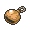
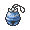
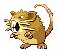
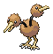
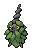
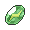

圆朱市、烧焦塔、圆朱道馆、38号道路、39号道路
主线
圆朱市
圆朱市坐落在城都北部的树林里，位于37号道路、38号道路和42号道路之间。这座城市珍视过去，保留着许多悠久的传统，比如当地舞蹈剧场的古老建筑，以及北边的两座塔。好几只传说的宝可梦都和这里有渊源，让圆朱市充满神秘感。
| 训练家 | 宝可梦 | 奖金 |
|---|---|---|
| 火箭队手下 | 瓦斯弹 Lv.12 | ₽480 |
| 宝可梦 | 版本 | 方式 | 等级 | 出现率 |
|---|---|---|---|---|
| 冲浪 | ||||
| 心金 / 魂银 | 冲浪 | Lv.10-25 | 90% | |
| 心金 / 魂银 | 冲浪 | Lv.15-25 | 10% | |
| 钓鱼 | ||||
| 心金 / 魂银 | 破旧钓竿 | Lv.10 | 85% | |
| 心金 / 魂银 | 破旧钓竿 | Lv.10 | 15% | |
| 头锤（A 组树） | ||||
| 心金 / 魂银 | 头锤 | Lv.12-14 | 50% | |
| 心金 / 魂银 | 头锤 | Lv.12-14 | 30% | |
| 心金 / 魂银 | 头锤 | Lv.12-14 | 20% | |
| 头锤（B 组树） | ||||
| 心金 / 魂银 | 头锤 | Lv.15-17 | 50% | |
| 魂银 | 头锤 | Lv.15-17 | 30% | |
| 心金 | 头锤 | Lv.15-17 | 30% | |
| 心金 / 魂银 | 头锤 | Lv.15-17 | 20% | |
| 道具 | 版本 | 位置 / 获得方法 |
|---|---|---|
| 探宝器 | 心金 / 魂银 | 最南边房子里的精英训练家给予 |
| 心金 / 魂银 | 城市中央的空地上，最北边那堆土上（隐藏道具） | |
| 心金 / 魂银 | 湖东南角往南两步、往东一步（隐藏道具） | |
| 心金 / 魂银 | 烧焦塔外，东墙附近烧焦的木头上（隐藏道具） | |
| 秘传学习器03（冲浪） | 心金 / 魂银 | 舞蹈剧场，从火箭队手下手中救出舞女后由一位绅士给予 |
| 招式学习器30（暗影球） | 打败道馆馆主松叶后由他给予 | |
| 心金 / 魂银 | 西边关口附近，从西数第二根路灯上（隐藏道具） | |
| 之后再来 | ||
 透明铃铛 | 心金 | 打败舞女们的奖励 |
 海声铃铛 | 魂银 | 打败舞女们的奖励 |
寻宝
去西南边的房子和里面的男人说话。他会送你一台探宝器，能探测附近的隐藏道具。
宝可梦中心
见见正辉
走进宝可梦中心会遇到宝可梦寄放系统的发明者正辉。程序也许是他发明的，但他说让它变得好用是远在丰缘地区的同伴 Lanette 的功劳。他说自己和世界各地的朋友一直在改进交换和寄放系统，然后回满金市的家了。
圆朱舞蹈剧场
第一次走进舞蹈剧场时，你会看到一名火箭队手下在为难一位舞女。他批评她的舞蹈，要她跳得「没那么严肃」。舞女拒绝了，他就自己在舞台上转起圈来，示范他想看的舞。和他说话，就能和这个捣乱的家伙对战！
之后他突然想起自己还有任务，跑掉了。如果你和舞女说话，她会说你又善良又强大，「那个人」看人的眼光果然没错。追问的话，她会说自己只是在自言自语。离开舞台时，观众席里的绅士会走过来，为了奖励你的勇气，送你秘传学习器03（冲浪）。
烧焦塔
城市西北部是烧焦塔烧焦的废墟。它从前叫铜之塔，曾经和东边的铃铛塔一样雄伟。据说塔刚建成时，有一只闪着银光的宝可梦栖息在上面。但几百年后，一场暴风雨袭来，塔被雷击中，燃起熊熊大火，烧了整整三天。银色的宝可梦和栖息在铃铛塔上的彩虹色宝可梦都毫发无伤地飞上了天空，银色的宝可梦飞走后再也没有回来。一场突如其来的大雨终于浇灭了大火，彩虹色的宝可梦让三只死于火中的无名宝可梦重获新生，然后也飞走了。
| 训练家 | 宝可梦 | 奖金 |
|---|---|---|
| 吐火人 Ned | 瓦斯弹 Lv.16 瓦斯弹 Lv.16 | ₽512 |
| 吐火人 Richard | 火恐龙 Lv.18 | ₽576 |
| 宝可梦 | 版本 | 方式 | 等级 | 出现率 |
|---|---|---|---|---|
| 1F | ||||
| 心金 / 魂银 | 1F | Lv.13, 15 | 50% | |
| 瓦斯弹 | 心金 / 魂银 | 1F | Lv.14, 16 | 35% |
| 心金 / 魂银 | 1F | Lv.14 | 10% | |
 拉达 | 心金 / 魂银 | 1F | Lv.15 | 5% |
| B1F | ||||
| 心金 / 魂银 | B1F | Lv.14, 16 | 早 40% · 日 0% · 夜 40% | |
| 心金 / 魂银 | B1F | Lv.14 | 早 0% · 日 35% · 夜 0% | |
| 心金 / 魂银 | B1F | Lv.15 | 5% | |
| 瓦斯弹 | 心金 / 魂银 | B1F | Lv.14, 16 | 50% |
| 心金 / 魂银 | B1F | Lv.14 | 早 5% · 日 0% · 夜 5% | |
| 心金 / 魂银 | B1F | Lv.16 | 早 0% · 日 10% · 夜 0% | |
| 道具 | 版本 | 位置 / 获得方法 |
|---|---|---|
| 1F | ||
| 心金 / 魂银 | 北墙旁，吐火人 Ned 后面那条死路的尽头（隐藏道具） | |
| 心金 / 魂银 | 地板上两个洞之间仅剩的几块木板上 | |
| 心金 / 魂银 | 最南边那块可敲碎岩石往北一步、往东一步（隐藏道具） | |
| 心金 / 魂银 | 西南角，靠南墙（需要碎岩） | |
| B1F | ||
| 心金 / 魂银 | 西北区域，柱子东边一块孤零零的岩石上（隐藏道具） | |
| 招式学习器12（挑衅） | 心金 / 魂银 | 西北角（需要怪力） |
| 心金 / 魂银 | 中南区域，四块一组的岩石中最南边那块上（隐藏道具，需要怪力） | |
1F
走进破败的塔，透过坍塌的地板能看到三只威严的宝可梦。附近还有两个男人；走近时，第一个人自我介绍叫米纳奇。他一直在追踪一只叫水君的宝可梦，听说它在这里。他让你从地板的洞往下看，说那只宝可梦就在楼下。不过他不能再靠近了，否则它又会像以前好几次那样跑掉。和第二个人说话，他会自我介绍是圆朱道馆的馆主松叶。他也来调查，一方面帮朋友，一方面作为馆主要真正了解这座城市的传说。
埋伏！
你走近通往 B1F 的梯子时，劲敌（西尔弗）又一次拦住了你。他在找据说在这里的传说宝可梦，指责你想抢先一步。他要阻止你，并和你开战。
劲敌对战 3
劲敌（西尔弗）上次对战后又添了一只宝可梦。小磁怪被火、地面、格斗属性攻击打会受重伤。选了火球鼠、或者在满金市换了腕力的训练家，大概不会觉得它有威胁。他的鬼斯仍然怕幽灵、超能力、恶属性招式。对他的超音蝠用岩石和电属性招式效果最好。他从空木研究所偷走的宝可梦升了几级，除此之外和上次差不多。
| 宝可梦 | 详情 |
|---|---|
Lv.20 · 幽灵 / 毒 | 特性：飘浮 招式：舌舔、奇异之光、黑色目光、诅咒 |
Lv.20 · 毒 / 飞行 | 特性：精神力 招式：翅膀攻击、超音波、惊吓、咬住 |
Lv.18 · 电 / 钢 | 特性：磁力 招式：电击、超音波、音爆、电磁波 |
Lv.22 · 火 | 特性：猛火 招式：火焰轮、烟幕、火花、电光一闪 |
| 宝可梦 | 详情 |
|---|---|
Lv.20 · 幽灵 / 毒 | 特性：飘浮 招式：舌舔、奇异之光、黑色目光、诅咒 |
Lv.20 · 毒 / 飞行 | 特性：精神力 招式：翅膀攻击、超音波、惊吓、咬住 |
Lv.18 · 电 / 钢 | 特性：磁力 招式：电击、超音波、音爆、电磁波 |
| 蓝鳄 Lv.22 · 水 | 特性：激流 招式：水枪、鬼面、冰冻牙、咬住 |
| 宝可梦 | 详情 |
|---|---|
Lv.20 · 幽灵 / 毒 | 特性：飘浮 招式：舌舔、奇异之光、黑色目光、诅咒 |
Lv.20 · 毒 / 飞行 | 特性：精神力 招式：翅膀攻击、超音波、惊吓、咬住 |
Lv.18 · 电 / 钢 | 特性：磁力 招式：电击、超音波、音爆、电磁波 |
Lv.22 · 草 | 特性：茂盛 招式：反射壁、魔法叶、毒粉、光合作用 |
对战结束后，西尔弗不把失败当回事，一边离开塔一边说你反正永远抓不到传说的宝可梦。
探索废墟
从梯子往北走，和吐火人 Ned 对战。沿着仅剩的几块木板往西走，拿解毒药，再和吐火人 Richard 对战。往南走，在一块可敲碎的岩石后面找到ＨＰ增强剂，然后原路返回爬下梯子。
B1F
在下层，你站在三只神秘的宝可梦面前。你靠近之前它们都没反应，一靠近，其中两只就立刻往不同方向冲出去，开始在大地上奔跑。水君停下来端详了你一会儿，也像其他两只一样跑走了。它们几乎在任何地方都可能遇到，但一见人就会马上逃走。在战斗中见过它们之后，图鉴会追踪它们的行踪。
片刻之后米纳奇出现了。他兴奋地问你有没有看到水君跑过去，说自己追了它十年，从没离得这么近。据他说，水君注意到了你，而圆朱市的传说宝可梦据说只会出现在它们认可的人面前。他自言自语说是不是该更积极地去找，然后和你道别。
铃铛塔
铃铛塔高高地耸立在城市东北部。这是一处圣地，只有少数人能进去。有圆朱市的迷雾徽章就能进门，但只能到一楼。要上到塔的其他地方，需要两件传说中的宝物。
圆朱道馆
| 圆朱市宝可梦道馆 馆主：松叶 能预见未来的神秘人 |
圆朱道馆专精幽灵属性宝可梦。幽灵属性招式对幽灵和超能力属性效果绝佳，而幽灵属性宝可梦怕幽灵和恶属性招式。一般和格斗属性招式对它们完全无效。
道馆里有一个看起来深不见底的大坑，上面架着一座窄桥。挑战者踩错地方会被送回入口。道馆训练家站在这条走道上，去馆主那里的路大致沿着每个训练家的视线方向。
松叶的宝可梦喜欢用间接的方式骚扰对手：怨恨和诅咒会消耗对手的体力和 PP，舌舔和催眠术能造成异常状态。他的大部分宝可梦还会用黑色目光让对手无法逃走。幽灵属性宝可梦怕幽灵和恶属性招式，不过用超能力属性招式攻击它们的第二属性毒属性，效果一样好。
| 训练家 | 宝可梦 | 奖金 |
|---|---|---|
| 灵媒 Georgina | ₽768 | |
| 灵媒 Grace | ₽960 | |
| 灵媒 Edith | ₽1056 | |
| 灵媒 Martha | ₽960 |
| 宝可梦 | 详情 |
|---|---|
Lv.21 · 幽灵 / 毒 | 特性：飘浮 招式：舌舔、怨恨、黑色目光、诅咒 |
Lv.21 · 幽灵 / 毒 | 特性：飘浮 招式：催眠术、食梦、诅咒、恶梦 |
Lv.25 · 幽灵 / 毒 | 特性：飘浮 携带： 招式：催眠术、暗影球、黑色目光、突袭 |
Lv.23 · 幽灵 / 毒 | 特性：飘浮 招式：诅咒、黑色目光、突袭、黑夜魔影 |
对战结束后，松叶会授予你迷雾徽章：50 级以下的宝可梦都会听你的话，并且能在野外使用冲浪。他还会送你招式学习器30（暗影球）。
38号道路
38号道路从圆朱市往西延伸，在树林间穿行，通往39号道路。
| 训练家 | 宝可梦 | 奖金 |
|---|---|---|
| 船工 Harry | ₽640 | |
| 迷你裙 Dana | ₽304 | |
| 养鸟人 Toby |  嘟嘟 Lv.16嘟嘟 Lv.17 嘟嘟 Lv.18 | ₽576 |
| School Kid Chad | ₽400 | |
| 大姐姐 Valerie | ₽1008 |
| 宝可梦 | 版本 | 方式 | 等级 | 出现率 |
|---|---|---|---|---|
| 心金 | 草丛 | Lv.16 | 早 30% · 日 30% · 夜 40% | |
| 拉达 | 心金 / 魂银 | 草丛 | Lv.16 | 30% |
| 魂银 | 草丛 | Lv.16 | 早 30% · 日 30% · 夜 40% | |
| 心金 / 魂银 | 草丛 | Lv.16 | 20% | |
| Farfetch'd | 心金 / 魂银 | 草丛 | Lv.16 | 早 10% · 日 10% · 夜 0% |
| 心金 / 魂银 | 草丛 | Lv.13 | 4% | |
| 布鲁 | 心金 / 魂银 | 草丛 | Lv.13 | 1% |
| 心金 / 魂银 | 草丛 | Lv.13 | 5% | |
| 头锤（A 组树） | ||||
| 心金 / 魂银 | 头锤 | Lv.13-14 | 50% | |
| 心金 / 魂银 | 头锤 | Lv.13-14 | 30% | |
| 心金 / 魂银 | 头锤 | Lv.13-14 | 20% | |
| 头锤（B 组树） | ||||
| 心金 / 魂银 | 头锤 | Lv.15-16 | 50% | |
| 魂银 | 头锤 | Lv.15-16 | 30% | |
| 心金 | 头锤 | Lv.15-16 | 30% | |
| 心金 / 魂银 | 头锤 | Lv.15-16 | 20% | |
| 头锤：山顶最东边的那棵树，从39号道路用攀岩上去 | ||||
| 心金 / 魂银 | 头锤 | Lv.18-20 | 65% | |
 结草儿 | 心金 / 魂银 | 头锤 | Lv.18-20 | 30% |
| 结草儿 | 心金 / 魂银 | 头锤 | Lv.21-25 | 5% |
| 道具 | 版本 | 位置 / 获得方法 |
|---|---|---|
| 白球果 | 心金 / 魂银 | 下层中间那条路上，围栏区西边的树上（每天一次） |
| 心金 / 魂银 | 关口西南边，中间和南边两条路之间 | |
 雷之石 | 心金 / 魂银 | 登记迷你裙 Dana 的电话后，她有时会送 |
| 之后再来 | ||
| 悠闲薰香 | 心金 / 魂银 | 西南区域，围栏后面，从39号道路过去（需要攀岩） |
| 心金 / 魂银 | 西南区域，围栏后面较大的白花上，从39号道路过去（隐藏道具，需要攀岩） | |
39号道路
39号道路是一片宁静的平原，从38号道路往下坡通往浅葱市。哞哞牧场在西北边。
| 训练家 | 宝可梦 | 奖金 |
|---|---|---|
| Psychic Nelson | ₽640 | |
| 船工 Eugene | 拉达 Lv.17 | ₽608 |
| 宝可梦迷 Derek | 皮卡丘 Lv.18 | ₽1152 |
| 宝可梦迷 Ruth | 皮卡丘 Lv.17 | ₽1088 |
| 宝可梦 | 版本 | 方式 | 等级 | 出现率 |
|---|---|---|---|---|
| 心金 | 草丛 | Lv.16 | 早 30% · 日 30% · 夜 40% | |
| 拉达 | 心金 / 魂银 | 草丛 | Lv.17 | 30% |
| 魂银 | 草丛 | Lv.16 | 早 30% · 日 30% · 夜 40% | |
| 心金 / 魂银 | 草丛 | Lv.16 | 20% | |
| Farfetch'd | 心金 / 魂银 | 草丛 | Lv.16 | 早 10% · 日 10% · 夜 0% |
| 心金 / 魂银 | 草丛 | Lv.15 | 5% | |
| 心金 / 魂银 | 草丛 | Lv.15 | 5% | |
| 头锤（A 组树） | ||||
| 心金 / 魂银 | 头锤 | Lv.14-15 | 50% | |
| 心金 / 魂银 | 头锤 | Lv.14-15 | 30% | |
| 心金 / 魂银 | 头锤 | Lv.14-15 | 20% | |
| 头锤（B 组树） | ||||
| 心金 / 魂银 | 头锤 | Lv.16-17 | 50% | |
| 魂银 | 头锤 | Lv.16-17 | 30% | |
| 心金 | 头锤 | Lv.16-17 | 30% | |
| 心金 / 魂银 | 头锤 | Lv.16-17 | 20% | |
| 道具 | 版本 | 位置 / 获得方法 |
|---|---|---|
| 心金 / 魂银 | 农舍东边的树上（每天一次） | |
| 贴纸盒 | 心金 / 魂银 | 牛棚里，治好大奶罐后由左边的女孩给予 |
| Fire Seal A ×3 | 心金 / 魂银 | 牛棚里，治好大奶罐后由右边的女孩给予 |
| Party Seal B ×3 | 心金 / 魂银 | 牛棚里，治好大奶罐后由右边的女孩给予 |
| Flora Seal C ×3 | 心金 / 魂银 | 牛棚里，治好大奶罐后由右边的女孩给予 |
| 招式学习器83（自然之恩） | 心金 / 魂银 | 农舍里，治好大奶罐后由农场主的妻子给予 |
| 哞哞鲜奶 | 心金 / 魂银 | 治好大奶罐后，可以向农场主购买，每瓶 ₽500 |
| 心金 / 魂银 | 牧场北部，西边围栏旁的草丛里（隐藏道具） | |
| 心金 / 魂银 | 牧场北部，两棵树东北一步处的草丛里（隐藏道具） | |
| 心金 / 魂银 | 牧场南部，最南边的草丛里（隐藏道具） 登记宝可梦迷 Derek 的电话后，他有时会送 | |
| 招式学习器60（吸取拳） | 心金 / 魂银 | 牧场南部，筒仓旁的角落里 |
见见 Baoba
你第一次走近最北边的路口时，会遇到一位叫 Baoba 的绅士。他说自己以前在关都的浅红市经营狩猎地带，但新的娱乐层出不穷，那里渐渐过时了。他出国学习了最新技术，在西南边的湛蓝市附近建了一座最先进的狩猎地带。你们交换了电话号码，新狩猎地带开张时他第一个通知你。
哞哞牧场
哞哞牧场靠一群大奶罐产奶，这里的牛奶连远在关都的人和宝可梦都爱喝。去农舍和农场主说话，会得知有一只大奶罐生病了，需要橙橙果才能康复。去牛棚会看到农场主的女儿们在照顾生病的大奶罐。要让它完全康复，总共要喂七个橙橙果。它恢复后，左边的小女孩会送你一个贴纸盒作为谢礼，和右边的小女孩说话还能各拿到三张火焰贴纸 A、派对贴纸 B 和花朵贴纸 C。之后去农舍和农场主的妻子说话，会得到招式学习器83（自然之恩）。从这时起，可以向农场主购买哞哞鲜奶，每瓶 ₽500。
原文：Bulbapedia《Walkthrough:Pokémon HeartGold and SoulSilver/Part 8》（修订版本 4452983，），作者见原文页面历史。本页由 Eli 的杂货间翻译为中文，并有改动（重新排版、精简部分图注）。原文与译文均以 CC BY-NC-SA 2.5 授权。配图来自原站，版权归原作者与游戏厂商。